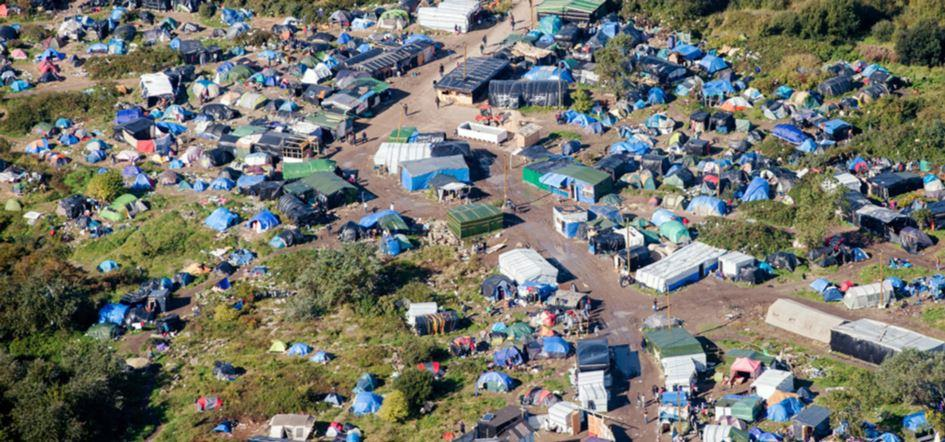

Tout le monde en parle, on ne pouvait donc pas se taire. Alors, voilà en quelques lignes l’avis des Brigandes sur les « Gilets Jaunes » :
QUAND LE POUVOIR CANALISE LE MÉCONTENTEMENT POPULAIRE
Quand un système est oppressif, comme l’est le système dans lequel nous vivons, une certaine colère populaire peut s’accumuler. Régulièrement, le pouvoir, sachant plus que quiconque à quel point il peut y avoir un mécontentement populaire qui s’accumule, doit donc « dégazer » celui-ci, faire descendre la pression. Il ne peut pas effacer le mécontentement, donc il va l’aiguiller dans des « voies de garage », il va le canaliser pour qu’il s’essouffle dans quelque chose qui ne soit pas trop subversif pour lui. Jusqu’à la prochaine fois.
Aujourd’hui, c’est les « Gilets Jaunes ». Le mouvement s’ancrait sur quelque chose de sensible et concret pour monsieur tout-le-monde : le portefeuille et la voiture. Et le pouvoir a dû y voir un moyen pour faire décompresser une colère qui doit de toute façon s’exprimer, mais dans une zone qui n’est pas trop dangereuse. D’où la médiatisation du mouvement et la présence de ses « porte-paroles » sur les plateaux avant même que les manifestations n’ait commencées, alors que tout cela aurait pu être beaucoup plus étouffé si le Système l’avait voulu. Le pouvoir n’était d’ailleurs pas gêné par les blocages des Gilets Jaunes : les victimes furent les Français eux-mêmes. On aurait préféré voir les bâtiments publics bloqués et des banques attaquées, plutôt que des citoyens obligés de passer une nuit entière sur la route. Et on aurait peut-être préféré voir un tel ras-le-bol se manifester pour des choses bien plus graves et moins liées à des intérêts individualistes : la crise migratoire et le Grand Remplacement, les débuts de la légalisation de la pédophilie par Schiappa il y a quelques mois, l’obligation sur-vaccinatoire criminelle, etc.
Le Système profite aussi souvent de ces « canalisations » du mécontentement populaire et de la focalisation des médias (donc de l’opinion) sur celle-ci, pour avancer sur d’autres terrains de manière plus « incognito ». Exemple frappant en ce moment : les gens sont dans la rue pour 30 centimes de carburant, mais Macron se prépare à signer dans moins de 10 jours, à Marrakech, le « Pacte de l’ONU sur les migrations ». Cette signature, bien plus grave, engage la France face au monde entier à continuer jusqu’à la fin la politique du Grand Remplacement. En effet, ce Pacte prévoit de « sacraliser » à l’échelle mondiale le droit de migration pour les peuples et les individus, et de combattre toute forme d’opposition à celui-ci. Et c’est un engagement devant l’ONU ! De nombreux pays, et d’ailleurs beaucoup de pays européens, ont déjà annoncés qu’ils ne signeraient pas ce pacte. Par contre, la France le signera. Pendant que les Gilets Jaunes combattent contre le prix du carburant…
Ces focalisations de l’attention, orchestrées par les médias, se font dans tous les domaines. Souvenez-vous par exemple de la « Jungle de Calais » sous François Hollande à une certaine époque. Toute l’actualité était ramenée à ça. Il fallait s’apitoyer sur les migrants, ou bien leur être opposé et être catalogué parmi les « salauds sans cœur ». Mais il fallait être focalisé sur cela et sur rien d’autre.

OUI À LA COLÈRE EXPRIMÉE À TRAVERS LES GILETS JAUNES, MAIS NON AU MOUVEMENT DES GILETS JAUNES
Nous soutenons le peuple français qui souffre et qui ne sait pas comment se débattre. Nous le comprenons. Le projet même des Brigandes est en partie motivé par cette souffrance du peuple français. Il est donc évident que nous soutenons les individus qui ont aujourd’hui un gilet jaune, mais qui demain pourraient avoir un pantalon bleu, parce qu’ils ne savent pas comment ni où déverser leur mécontentement. Par contre, si nous soutenons les individus, nous ne soutenons pas le mouvement Gilets jaunes en tant qu’« institution ». Car nous savons qu’il est une voie qu’on a créée pour la colère populaire, et que si on a créé cette voie, c’est justement qu’il vaut mieux ouvrir les yeux sur d’autres choses, plus importantes, qui passent sous le nez de cette colère.
Le mouvement Gilets Jaunes est un fourre-tout qu’on a mis en place pour l’opposition de tous bords, mais dans lequel on est canalisé pour ne protester que sur des choses bien précises, pas sur le reste. C’est un coup émotionnel, mais s’il faut s’associer de manière constructive, tout éclate en mille organisations distinctes.
Pour information, chez nous à La-Salvetat-sur-Agoût, les Gilets Jaunes les plus zélés (les seuls qu’on remarque encore aujourd’hui) font partie de nos ennemis les plus acharnés – des bolchos aussi rouges que Lénine qui aimeraient nous faire disparaitre de la surface de cette planète. L’association avec ces gens-là eut été impossible, et c’est un euphémisme que de le dire !
Au départ les syndicats n’ont pas soutenu le mouvement, ce qui a permis à celui-ci de ne pas être politisé et donc à n’importe quel Français de pouvoir y participer. Tout le monde, de l’extrême-gauche à l’extrême-droite, s’est ainsi rué sur le mouvement pour essayer de le reprendre. Jusqu’à ce que des « porte-paroles auto-proclamés » aient été désignés pour discuter avec le gouvernement et les médias, comme ce Jason Herbert qui est un journaliste syndicat de la CFDT et de la CGT, et dont les idées ne doivent sûrement pas représenter les préoccupations de la majorité des Gilets Jaunes.
IL NE FAUT PAS OUBLIER LES VRAIS ENJEUX ET LES VRAIS COMBATS
Le problème d’une telle canalisation de l’opposition est qu’on gonfle une grosse bulle qu’il suffit ensuite de péter pour que tout redescende. C’est-à-dire : on focalise la colère populaire sur le prix du carburant en particulier et le racket fiscal en général, on fait monter la tension autour de ça, et au bout d’un moment le gouvernement peut dire « C’est bon, vous avez gagné, on va faire une petite réforme économique sur tel ou tel point. » Cette « petite réforme » ne change rien du tout pour le gouvernement, par contre elle fera retomber les 95 % du mouvement qui se satisferont de leur petite victoire, sachant de toute manière qu’ils n’auront rien de plus. Nous comprenons l’engouement que l’on peut avoir pour les Gilets Jaunes, avec lesquels nous partageons la haine de Macron et consort, mais il faut rester lucide. Il faut savoir où se trouvent les vrais problèmes et comment les combattre.
Vous connaissez notre position sur la société moderne : elle est fondamentalement dégénérée, et nous devons donc lui tourner le dos pour poser les bases de quelque chose de nouveau. Il est vrai qu’à partir de cette réflexion, le militantisme de rue n’a plus aucun intérêt. Mais c’est un autre sujet. À partir de cette position plus « élitiste », nous continuons à œuvrer pour le combat populaire avec un organe comme celui des Brigandes, mais nous le faisons inévitablement avec un point de vue plus détaché et donc, ce qui en est la qualité, plus « global » sur tous les problèmes. C’est notre rôle, et nous ne pourrons donc jamais nous enfoncer totalement dans un problème particulier et dans une crispation populaire momentanée. Nous continuerons toujours à mettre en relief l’affreuse nature du monde moderne dans son ensemble, qui continue de tourner peu importe le prix du carburant. (Revoir par exemple le début de la vidéo des Brigandes à leurs détracteurs, où est rapidement décrite la civilisation infâme dans laquelle nous vivons : https://le-clan-des-brigandes.fr/2018/10/22/message-des-brigandes-a-leurs-detracteurs/). Que d’autres prennent à cœur de plonger dans la réactivité populaire momentanée est une bonne chose, car il en faut. Mais il ne faut pas pour autant qu’ils en perdent leur lucidité.
En conclusion, la position des Brigandes est simple : oui à la juste colère populaire qui s’exprime à travers les Gilets Jaunes, mais non au mouvement en tant qu’organisation et à la voie de garage qu’il nous présente.
ANNEXE : MISE AU POINT SUR LE RÉVEIL DES PEUPLES ET LE POPULISME
Cet article est l’occasion de faire une mise au point sur ce qu’on appelle le « réveil des peuples ». Le réveil des peuples n’existe pas : le peuple ne bouge que si son assiette est vide, et c’est alors les minorités les mieux organisées et disposant des moyens les plus puissants qui récupèrent le mouvement informe et sans tête du peuple pour le mener dans la direction qui leur convient. Cela peut être dans une direction ou dans une autre, mais ce sont toujours les minorités qui disposent de moyens qui font l’histoire : le peuple ne bouge pas de lui-même, et s’il bouge parce qu’il meurt de faim, il attend qu’on le reprenne en main pour le réorganiser différemment – avec la demande de sécurité comme première revendication. C’est normal, c’est la nature de la masse : le dénominateur commun l’emporte, et c’est celui du ventre, suivi par l’instinct de sécurité. (Relire le chapitre « Le mythe du réveil des peuples » de notre Manifeste des Clans du futur)
Que le peuple soit défendu afin qu’ils vivent dignement est une évidence, mais par contre il ne faut pas lui demander de se lever pour des idéaux qui dépassent les murs de la maison, et c’est normal !
Ainsi, le populisme ne saurait être une fin en soi. Aujourd’hui, l’oligarchie financière a atteint un tel pouvoir totalitaire qu’on est forcé d’être « populiste » face à elle. Mais cela ne suffit pas. Être populiste dans le sens de « défendre le peuple » devrait être un bon sens naturel. Par contre, être populiste dans le sens de faire des intérêts du peuple (c’est-à-dire, en gros, de ses appétits de confort et de sécurité) le but de l’existence humaine, est une dégénérescence moderne qui laisse peu de place aux vertus supérieures. C’est comme l’instinct d’une mère pour allaiter son enfant : cela devrait être naturel, mais de là à en faire le but de la vie…
Ainsi, nous sommes favorables au populisme, mais nous sommes loin de nous cantonner à cela : on ne peut pas tout rabaisser aux appétits égoïstes des masses. C’est là toute l’ambiguïté, pourtant cohérente, du groupe des Brigandes : promouvoir l’affection et la défense de notre peuple, mais aussi faire passer des valeurs et des idées supérieures pour ceux qui ne se suffisent pas de manger et de se divertir, mais ont besoin d’autres perspectives pour sortir de l’étouffante civilisation matérialiste.
Les intérêts de la masse, c’est l’addition des intérêts égoïstes individuels. Et le fait qu’ils soient additionnés ne les rend pas plus altruistes et nobles. Nous sommes révolutionnaires, mais nous ne mènerons jamais la révolution pour l’augmentation du pouvoir d’achat ou autres causes du même acabit. Si nous devons faire la révolution, ce sera pour le triomphe de la conscience, de la beauté, de la force – de tout ce qui peut ennoblir l’homme. Et la défense du peuple est automatiquement comprise là-dedans, elle n’a même pas besoin d’être formulée. Par contre, elle n’est ni l’origine ni la finalité de ce combat.
Partager cette page